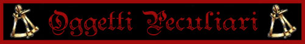
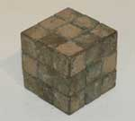
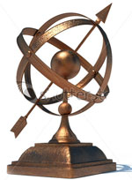
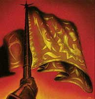
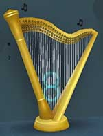
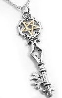
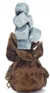

Gli oggetti magici generici possono essere suddivisi in base alla potenza dell'incantamento magico. I poteri magici, quindi possono essere suddivisi in:
|
POTENZA DELL'INCANTAMENTO |
PUNTI ESPERIENZA |
| Minor Enchantment* | da 75 a 375 punti esperienza |
| Lesser Enchantment | da 500 a 999 punti esperienza |
| Superior Enchantment | da 1000 a 1499 punti esperienza |
| Greater Enchantment | da 1500 a 2999 punti esperienza |
| Extraordinary Enchantment | da 3000 punti esperienza in poi |
* si noti che i Minor Enchantment sono incantamenti magici minori per i quali sono applicate specifiche regole non riportate nella relativa sezione (LINK).
Gli oggetti magici peculiari possono essere suddivisi a loro volta in numerose sottocategorie di oggetti magici.

Il catalogo dei poteri magici generali che non rientra in una specifica sottocategoria è suddiviso fra incantamenti creati dagli utenti di magia (natura magica) a loro volta suddivisi per scuola di magia di appartenenza e fra incantamenti creati dai sacerdoti (natura clericale) a loro volta suddivisi per divinità di appartenenza


| OGGETTO | Cube of Energy Field |
| ORIGINE | MAGICA |
| POTENZA | Lesser Enchantment (650 xp, 6500 gp) |
| CARICHE | 12 |
|
DESCRIZIONE
 |
Questo cubo magico è comunemente costruito in bronzo e pesa 2 libbre. Attivando il cubo, azione complessa a fattore iniziativa pari a +2 che non richiede la concentrazione ma l'utilizzo di componenti somatici e vocali (pressioni sui lati del cubo e parola magica di attivazione), viene creato un campo di forma sferica di energia azzurrina incentrato sull'utilizzatore. La barriera è inamovibile e misura 9 metri di diametro. La barriera permette piena visibilità dall'interno all'esterno ma blocca il passaggio di qualsiasi oggetto materiale e/o creatura. Non previene il lancio di incantesimi che partendo dall'interno svolgano i loro effetti direttamente all'esterno della stessa e viceversa ma blocca materia magica che passi attraverso di essa. La barriera blocca anche gli attacchi fisici ed i proiettili che provino ad attraversarla nonché il passaggio delle creature da dentro a fuori e viceversa. La barriera non blocca in alcun modo metodi di trasporto magico come ad esempio l'incantesimo dimensional door. La materia magica bloccata, nonché i proiettili, le armi da lancio e gli attacchi fisici bloccati, però, danneggeranno la barriera che svanirà immediatamente dopo aver assorbito un ammontare di danni pari a 30 danni. Se un attacco a distanza o ad area è in grado di produrre danni ulteriori rispetto a quelli assorbiti lo stesso oltrepasserà, quindi, la barriera producendo sul bersaglio solo il danno residuo, i successivi attacchi ed incantesimi del round passeranno indisturbati. Tutte le cariche magiche del cubo possono essere utilizzate senza che il potere magico dello stesso si disperda. In questo ultimo caso, però, la possibilità di rottura dell'anello durante la fase di ricarica sarà incrementata del +5%. |


| OGGETTO | Sphere of Directions |
| ORIGINE | MAGICA |
| POTENZA | Superior Minor Enchantment (250 xp, 2750 gp) |
| SCUOLA DI MAGIA | DIVINATION |
|
DESCRIZIONE
 |
Questo strumento rappresenta il pianeta e la sfera celeste ed è costruito il legno e metalli dolci, ha un valore pari a 150 monete d'oro ed un peso pari a 3 libbre. Una volta che questo strumento è stato incantato con questo incantamento minore lo stesso può essere attivato con un’azione complessa dalla durata di un intero round, avente componenti verbali (parola di attivazione) e somatici consistenti nel far ruotare le sfere che lo compongono, che non richiede il mantenimento della concentrazione. Quando si procede all'attivazione, lo strumento ruoterà magicamente e la freccia punterà verso nord indicando quindi tutte le direzioni cardinali riportate sulle fasce metalliche che lo compongono. Lo strumento continuerà a puntare verso nord girando automaticamente anche qualora lo stesso sia ruotato o spostato, fino a che lo stesso non sia disattivato utilizzando un'azione simile a quella di attivazione. |
| OGGETTO | Crystal Ball | ||||||||||||||
| ORIGINE | MAGICA | ||||||||||||||
| POTENZA |
Crystal Ball -
Superior Enchantment
(1000 xp, 10000 gp) Crystal Ball con Clairaudience - Superior Enchantment (1300 xp, 13000 gp) |
||||||||||||||
 |
La Sfera di Cristallo rappresenta lo strumento di divinazione magica per eccellenza. Questo oggetto magico, costituito da una grossa sfera di cristallo dal peso minimo di 5 libbre e dal valore di almeno 500 monete d'oro, può essere utilizzato unicamente dagli utenti di magia. Quando un mago utilizza quest'oggetto lo attiva con un'azione complessa assimilabile al lancio di un incantesimo che necessita di componenti somatici e materiali, del mantenimento della concentrazione, nonché dell'utilizzo di 10 punti magia che saranno regolarmente utilizzati (non potendosi utilizzare competenze od altre tecniche, come ad esempio Tactics of Magic, che permettono di far risparmiare punti magia). Si noti che il mago dovrà utilizzare punti magia prelevandoli interamente da un unico livello di potere tra quelli a sua disposizione. Orbene, il mago deve concentrarsi necessariamente su una creatura della cui esistenza sia a conoscenza. Il mago quindi dovrà superare una prova per determinare se è riuscito nella divinazione. La prova dipende da diversi fattori tra quali assume un ruolo fondamentale la conoscenza che il mago ha della creatura, come indicato nella seguente tabella (fermo restando i limiti di successo critico da 01% a 05% ed di fallimento critico da 96% a 100%):
Se il tiro percentuale fallisce il mago non avrà avuto successo nella divinazione e potrà provare ad utilizzare la Sfera di Cristallo sulla medesima persona solo una volta trascorse 24 ore. Se il tiro percentuale riesce nella sfera comparirà l'immagine in tempo reale della creatura. L'immagine sarà centrata sulla creatura apparendo solo elementi del contesto (compresi oggetti ed altre creature) che sono assai vicini alla stessa (a non oltre 3 metri di distanza). |
||||||||||||||
|
La Sfera di Cristallo non
produce suoni, a meno che non sia incantata anche con l'effetto di
Clairaudience,
in tal caso dalla sfera saranno emessi gli stessi suoni che nel corso
della durata della divinazione sono ascoltati dalla creatura (se,
quindi, ad esempio, la creatura è sorda non si sentirà alcunché). La
durata della divinazione perdura fino a che il mago mantiene la
concentrazione ma non può, comunque, superare i dieci round. Anche in
caso di successo non può essere effettuata una nuova divinazione sulla
medesima persona prima che siano trascorse 24 ore. |
|||||||||||||||

| OGGETTO | Banner of Valor |
| ORIGINE | MAGICA |
| POTENZA | Lesser Enchantment (550 xp, 5500 gp) |
|
DESCRIZIONE
 |
Questo stendardo magico di
stoffa finemente ricamata (dal valore minimo di 250 monete d'oro) deve
essere posizionato su un'asta di dimensioni medie (medium) dal peso di 3
libbre. Lo stendardo può essere attivato una volta ogni 24 ore.
L'attivazione è un'azione complessa che si effettua ad un fattore
iniziativa pari a +5 che richiede componenti verbali (la lettura della
frase ricamata sullo stendardo facente riferimento alla fazione che
rappresenta) e somatici ma non il mantenimento della concentrazione. Una
volta attivato lo stendardo deve essere conficcato nel terreno (azione
fisica complessa) o mantenuto tra le mani da chi lo ha attivato, se
infatti lo stesso viene impugnato da una creatura diversa o cade al
suolo l'effetto magico terminerà immediatamente. Lo stendardo, quindi,
concederà per 10 round a tutti gli alleati di colui che lo ha attivato
che trovino entro 15 metri di distanza i seguenti benefici: |
| OGGETTO | Harp of Refreshment | |||||||||||||||||||||||||||||||||||
| ORIGINE | MAGICA | |||||||||||||||||||||||||||||||||||
| POTENZA | Variabile | |||||||||||||||||||||||||||||||||||
| CARICHE | 12 | |||||||||||||||||||||||||||||||||||
|
DESCRIZIONE
 |
Con questo incantamento può
essere incantata una qualsiasi arpa finemente lavorata ed intarsiata.
Un'arpa a braccio deve
avere un costo di almeno 250 monete d'oro ed un peso pari a 5 lbs.
Un'arpa grande deve avere un
costo medio di 700 monete d'oro ed un peso pari a 40 lbs.
Attivando l'arpa, azione complessa a fattore iniziativa pari a +3 che
non richiede la concentrazione ma l'utilizzo di componenti somatici e
vocali (suonarne le corde e pronunciare la parola magica di
attivazione), una dolce melodia viene diffusa intorno alla stessa. La
melodia risulta udibile fino a 15 metri di distanza (30 metri in caso di
arpa grande). Orbene, la melodia
avrà effetto sulla persona che attiva l'arpa e su due persone
supplementari (tre persone in caso di arpa grande) eventualmente da lui
indicate che si trovino entro 15 metri di distanza (30 metri in caso di
arpa grande) al momento
dell'attivazione e rispettando le regole della vista nel lancio degli
incantesimi. Dunque, alla fine di ogni ora, per le cinque ore successive
all'attivazione (sette ore in caso di arpa grande), le creature
beneficiarie riceveranno gli effetti ristoratori della musica dei
Cantori "Musica Ristoratrice". A seconda della potenza dell'incantamento
si tratterà di una Melodia, di una Ballata, di una Canzone o di una
Sinfonia, come indicato nella successiva tabella. Si tratta di una
musica che è in grado di aiutare magicamente il recupero delle energie
fisiche e mentali perse. Ogni ora in cui si è sottoposti agli effetti di
questa musica si recuperano magicamente punti ferita, punti magia e
punti fatica, indipendentemente dall'attività svolta e con eventuale
cumulo con i punti recuperati in altro modo magico o naturale (i
soggetti in coma non ricevono alcun beneficio da questa musica).
Gli effetti permarranno fino a che la musica resterà udibile dai beneficiari (che quindi dovranno trovarsi costantemente entro 15 metri di distanza in caso di arpa a braccio oppure 30 metri in caso di arpa grande). Se, quindi, per qualsiasi motivo, la musica non sarà più udibile, per almeno un intero round, gli effetti termineranno definitivamente nei confronti delle creature che hanno interrotto l'ascolto (ovviamente, quindi, se l'arpa viene silenziata oppure viene dissolta magicamente, gli effetti dell'oggetto termineranno immediatamente per tutti i beneficiari). Tutte le cariche magiche dell'arpa possono essere utilizzate senza che il potere magico dello stessa si disperda. In questo ultimo caso, però, la possibilità di rottura dell'arpa durante la fase di ricarica sarà incrementata del +5%. |


| OGGETTO | Key of Hut Conjuration |
| ORIGINE | MAGICA |
| POTENZA | Lesser Enchantment (500 xp, 5.000 g.p.) |
| CARICHE | 5 |
|
DESCRIZIONE
 |
Questa grossa chiave incantata di metallo prezioso (normalmente argento ed oro) dal peso di 1/2 libbra e dal valore minimo di 100 monete d'oro può essere utilizzata per convocare ad esistenza una vera e propria baita in legno. L'attivazione richiede un'azione complessa dalla durata di un intero round con componenti somatici e materiali (parola magica di attivazione) ma non il mantenimento della concentrazione. La baita apparirà con la porta in posizione adiacente a quella occupata da chi utilizza l'oggetto purché tutta la baita (dal diametro di 9 metri) possa essere poggiata su una superficie solida in grado di reggerla e vi siano almeno 6 metri di spazio liberi di altezza dalla superficie sulla quale deve essere poggiata. Inoltre, tutte le posizioni occupate dalla baita devono risultare libere al momento dell'attivazione. Se anche uno dei requisiti non è rispettato l'effetto magico non si attiverà (senza consumo della relativa carica magica). La chiave, consumando una carica magica, farà quindi apparire la baita di legno. La baita potrà ospitare fino a cinque creature di taglia medium o large, creature di taglia superiore non possono entrare nella baita dal suo ingresso (fatta eccezione per le creature lunghe ma sottile come i serpenti). All'interno della baita saranno presenti cinque comodi letti capaci di ospitare creature anche di dimensione large, coperte, lanterna ed olio per una giornata, stufa a legna e arnesi per cucinare e vettovaglie, un barile d'acqua e cibo da cucinare di media qualità in grado di sfamare e dissetare cinque creature di dimensione media per un'intera giornata. All'ingresso della baita vi è una porta di legno rinforzata in metalli dolci con una serratura di qualità normale ed una chiave. La porta ha 35 punti struttura, classe armatura pari ad AC 5 ed essendo rinforzata non può essere aperta a spallate con una normale prova di forza. Dentro la baita vi è inoltre un paletto di legno in grado di rafforzare la porta che quando è posizionato conferisce alla porta un bonus di 15 punti struttura. Ogni sezione di muro o di tetto è in legno robusto (avendo 100 punti struttura ed AC 4). Una volta creata la baita, la chiave magica scomparirà e la baita con tutta l'attrezzatura resterà ad esistenza per 24 ore. Chi ha creato la baita, può in ogni momento (azione complessa dalla durata di un round da effettuare toccando un qualsiasi muro perimetrale della baita) fare svanire la baita con tutto quello che era apparsa per veder riapparire nelle proprie mani la chiave incantata. Anche se inserito in contenitori o trasportato fuori la baita tutto quello che era apparso scomparirà quando la baita stessa svanirà. Si tratta di un oggetto incantato ricaricabile anche in caso di utilizzo totale di tutte le sue cariche magiche.
|


| OGGETTO | Guardian Stones |
| ORIGINE | DIVINA |
| POTENZA | Lesser Enchantment (500 xp, 5000 gp) |
| SCUOLA DI MAGIA | SUMMONING |
|
DESCRIZIONE
 |
I chierici di Srodan incantano con questo potere magico uno speciale sacco di cuoio che contiene cinque piccole rocce dal peso complessivo di 2,5 libbre. Chiunque può utilizzare le rocce contenute nel sacchetto per richiamare ad esistenza un guardiano di roccia. L’utilizzo dell’oggetto è, infatti, effettuato tramite il lancio manuale della roccia che si considera un’azione complessa per la quale sono utilizzate le regole per lanciare un oggetto a distanza (link). Non sarà, infatti, possibile rimuovere in alcun altro modo le pietre sacre dal sacchetto di cuoio. Nel luogo (esagono) ove atterrerà la pietra sacra, si alzerà un guardiano di terra compatta dalla forma vagamente umanoide, dell'altezza pari a 2 metri. Se la pietra finisce in una posizione occupata il guardiano apparirà nella più vicina posizione libera, selezionata casualmente tra le eventuali posizioni libere equidistanti. Il guardiano potrà essere comandato da chi ha lanciato la pietra come una qualsiasi creatura richiamata che risponderà ai classici ordini: "attacca, difendi, segui e fermati". Il primo ordine potrà essere impartito in fase di lancio della pietra. Il guardiano avrà le caratteristiche elencate nell’incantesimo speciale di Srodan, di quarto livello di potere, “Earth Guardian” (link). Il guardiano si sgretolerà permanentemente qualora finisca tutti i punti ferita ed, in ogni caso, una volta trascorsi i dieci round dal momento di attivazione del potere. Una volta utilizzata, ogni pietra si sgretolerà definitivamente. Si noti che, nel corso della durata dell’effetto del potere, non sarà possibile utilizzare altre pietre sacre presenti nel medesimo sacchetto. |